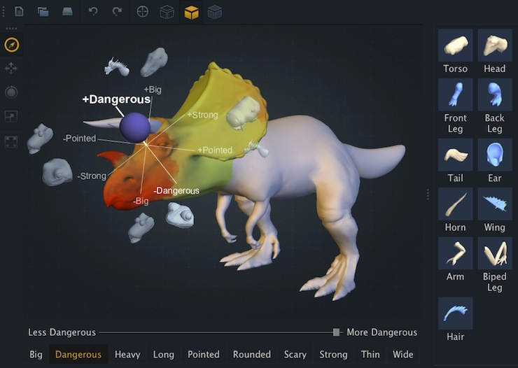

AttribIt: Content Creation with Semantic Attributes
Siddhartha Chaudhuri,
Evangelos Kalogerakis,
Stephen Giguere, and
Thomas Funkhouser
Proc. UIST, 2013 [BibTeX]
Preprint: [PDF]
AttribIt is an approach for people to create visual content using relative semantic attributes expressed in linguistic terms. During an off-line processing step, AttribIt learns semantic attributes for design components that reflect the high-level intent people may have for creating content in a domain (e.g. adjectives such as "dangerous", "scary" or "strong"), and ranks the components according to the strength of each learned attribute. Then, during an interactive design session, a person can explore different combinations of visual components using commands based on relative attributes (e.g. "make this part more dangerous"). Novel designs are assembled in real-time as the strengths of selected attributes are varied, enabling rapid, in-situ exploration of candidate designs. We applied this approach to 3D modeling and web design. Experiments suggest this interface is an effective alternative for novices performing tasks with high-level design goals.
Video
A high-quality version of the video can be downloaded for offline viewing
here (QuickTime, 50 MB).